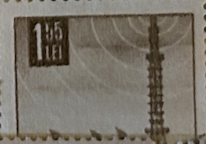
| SOURCE | TITLE| IMAGE MATCH | click to source page |
| eBay | 4 Cent Business, Industry, Careers US Stamp Sheets for sale | eBay | 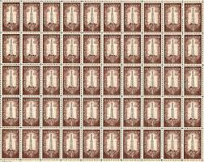 |
| eBay | US #1134 4¢ Petroleum Industry Sheet of 50 VF NH MNH | eBay | 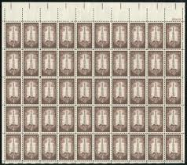 |
| eBay | Petroleum Industry Mint Sheet of 50 Stamps Scott #1134, MNH, Free Shipping! Nice | eBay | 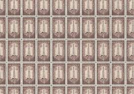 |
| Etsy | Sheet of Progress in Electronics Stamps, 1973 Unused Postage Stamps, 6 Cent Stamps - Etsy | 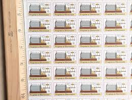 |
| Stamp Auction Network | Daniel F. Kelleher Auctions, LLC Sale - 627 Page 15 | 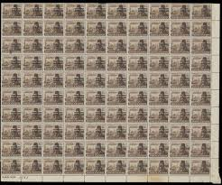 |
| eBay | 4 Cent Brown US Postage Stamps for sale | eBay | 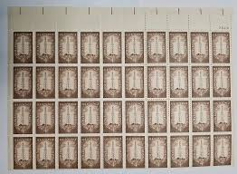 |
| Bob Shop | Israel - Israel - 1 Block of 4 - 1968 - MM for sale in Cape Town (ID:670843412) | 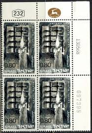 |
| Stamp Auction Network | Robert A. Siegel Auction Galleries, Inc. Sale - 1114 Page 152 | 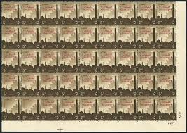 |
| US#2096 – 1984 20c Smokey Bear, Fire Prevention : r/philately | 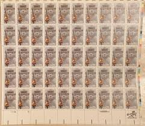 | |
| eBay | US MINT SHEET SCOTT#1134,4C PETROLIUM INDUSTRY SHEET OF 50 MNH OG | eBay | 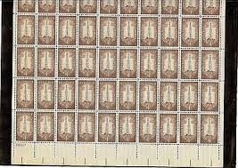 |
| Stamp Auction | Daniel F. Kelleher Auctions, LLC Sale - 663 Page 51 | 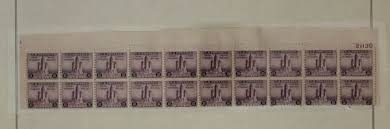 |
| eBay | ISRAEL 1968 FREEDOM FIGHTERS #367 PLATE BLOCK of 4 MNH | eBay | 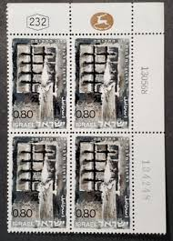 |
| Mystic Stamp Company | 1437 - 1971 8c San Juan - Mystic Stamp Company | 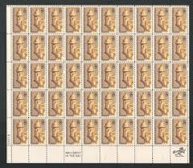 |
| eBay Australia | 1959 4c Petroleum Industry Stamp, Sheet of 50 Stamps | eBay Australia | 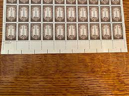 |
| eBay | 1959 4c Petroleum Industry Stamp, Sheet of 50 Stamps | eBay | 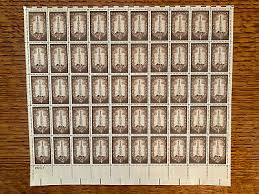 |
| US Stamps at Face | Scott #5636-5639 Forever Sheet of 20 Message Monsters, US Stamps at Face | 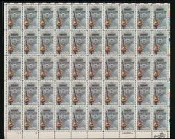 |
| HipStamp | C-70 Alaska Purchase Centennial MNH 8¢ Sheet of 50 FV $4 Issued 1967 | United States, Stamp / HipStamp | 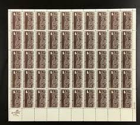 |
| eBay | 6c Stamps Progress In Electronics Marconi Spark Coil Block Of 20 W/ Plate Number | eBay | 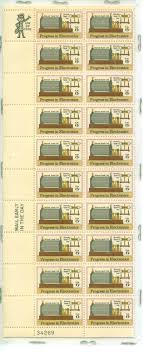 |
| 4StampSales | US Stamp 1984 Smokey the Bear 50 Stamp Sheet #2096 | 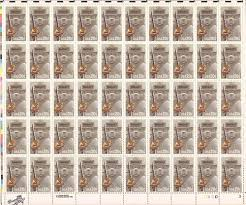 |
| eBay UK | Egypt-Sheet-1953-3m-Farouk Military definitive OVPT 3 bars-Brown -Scott # 345 | eBay UK | 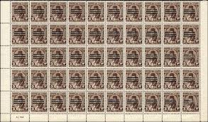 |
| Detective Conan postcards for swap 💗 PART II To swap only with other DetCo postcards #detectiveconan #postcard #kartupos | 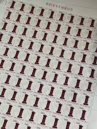 | |
| Yelp | SWEET TOPPINGS - Updated February 2026 - 41 Photos - Loganville, Pennsylvania - Desserts - Phone Number - Yelp | 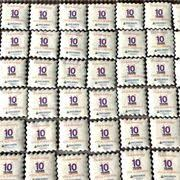 |
| eBay | USPS Petroleum Industry 1859-1959 4 Cent Full Sheet Postage Stamps | eBay | 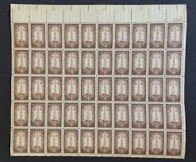 |
| Maps on Stamps | Maps on Stamps : Israel | A Database of Cartophilately | 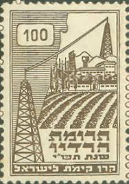 |
| eBay | Judaica Israel Old FDC Philharmonic Toscanini Sheet | eBay | 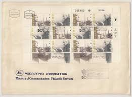 |
| eBay | Philippines Official Stamps w/Handstamp and Manuscript Marks & More lot L1527c | eBay | 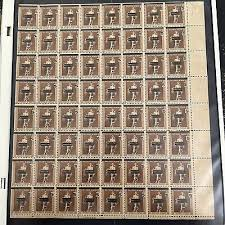 |
| seemystamps.com | See My Stamps! - A Place to Show Off Your Stamp Collection | Page 39 | 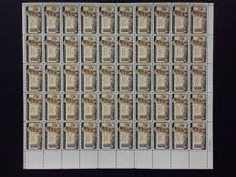 |
| eBay | Fiscal, Revenue Egyptian Stamps for sale | eBay | 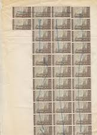 |
| eBay | 3 Cent Multi-Color Used US Stamps (1901-Now) for sale | eBay | 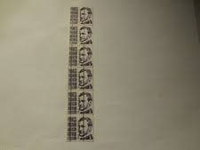 |
| eBay | Scott #2054 Metropolitan Opera Plate Block of 20 Stamps MNH P#2-3 UR | eBay | 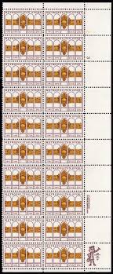 |
| Maps on Stamps | Maps on Stamps : Israel - KKL JNF (Jewish National Fund) | A Database of Cartophilately | 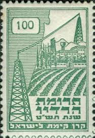 |
| eBay | Scarce F-VF MINT NH PRECANCEL JOINT LINE, GAP and Reg. Strps of 6 #1616b-0.5mm | eBay | 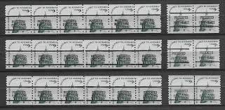 |
| eBay | Antique Mortar -SHEET (I)- (MNH) | eBay | 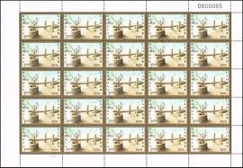 |
| eBay | Collection of Japan Stamps First Day Covers & Commemoratives in Album 1961-1971 | eBay | 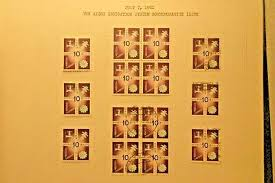 |
| eBay | Germany 1944 -(Reich) - MNH stamps. Mi Nr.: 886.Sheet of 50.... (EB) AR-02682 | eBay | 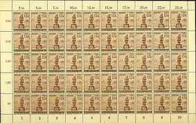 |
| eBay | Bears United States 20 Cent Denomination Stamps for sale | eBay | 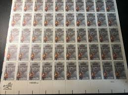 |
| eBay | France Poste Stamp No. 913 in 10 Sheet Fragment New ** MNH | eBay | 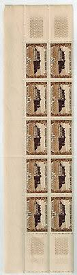 |
| Delcampe | Search in the "Asia > East Timor" category | Delcampe | 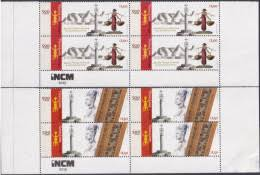 |
| Todocolección | 50 sellos de correos de 1,50 ptas cincuentenari - Buy New stamps of the Second Centenary on todocoleccion | 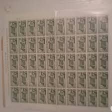 |
| riversidestamps.com | Suspect Scott #387 | 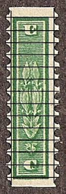 |
| LOT-ART | Collectors' Council- Vladi fish Auction No. 30 in Israel | 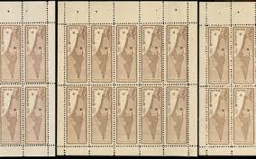 |
| eBay | Malta Kleinbogen Michelnummer 704 - 705 postfrisch (KLBG 1627 ) | eBay | 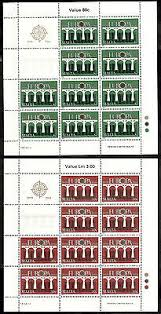 |
| eBay | Denmark 1982 - The 100th Anniversary of the Cooperative Dairy Farming - Mint/NH | eBay | 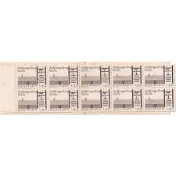 |
| Steve Malack Stamps | 1934b VF OG NH, 18c Frederic Remington, black ommitted, tiny stain on one stamp! - Steve Malack | 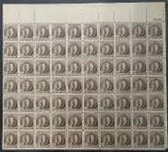 |
| eBay | Scott #2054 Metropolitan Opera Plate Block of 4 Stamps MNH P#1-2 UL | eBay | 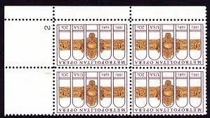 |
| eBay | US 3612 American Design American Toleware 5c PNC11 MNH 2002 | eBay | 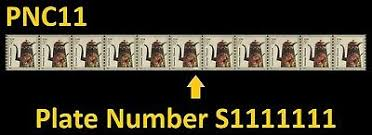 |
| WordPress.com | Meir Eshel – Israeli postage stamps בולי דואר ישראליים | 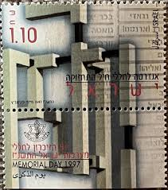 |
| eBay | USPS 1988 SCOTT #2340 200TH ANNIV. CONNECTICUT STATE 22C FULL SHEET 50 STAMPS | eBay | 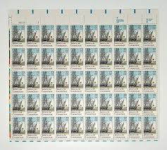 |
| eBay | W TURKMENISTAN ST Y2001 (2) ART MINI SHEET | eBay | 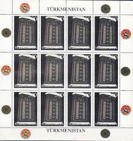 |
| eBay | 1584, MNH 3¢ Misperforation Shift Error In Complete Sheet of 100 - Stuart Katz | eBay | |
| HipStamp | China Stamp-1981-Sc#1718-20 70th Anniversary- Revolution-Sun YAT SEN Sheets | Asia - China, General Issue Stamp / HipStamp | |
| eBay | BULGARIA 1941 HRISTO BOTEV POET REVOLUTIONIST FREEDOM FIGHTER 3 FULL SHEETS MNH | eBay | |
| eBay | US SCOTT C70 PANE OF 50 ALASKA PURCHASE AIRMAIL STAMPS 8 CENT FACE MNH | eBay | |
| eBay | Israel Sc435 Labor Federation Histadrut, Menorah, Designer Signed Sheet | eBay | |
| eBay Australia | 3 banconote - lire 1000 - marco polo - serie consecutiva - mf530459-60-61 - fds | eBay Australia | |
| eBay | Venezuela: 1978; Scott 1228-1229 sheet complete of 50 stamps Bolivar... VZ1816 | eBay | |
| eBay | Germany Deutsches Reich Stamps 1943 Labor Sercice x 4 Full Sheet 850-853 MNH | eBay | |
| eBay | Israel 1038, MNH, Bedouin Culture Museum, 1990 Full Sheet | eBay | |
| eBay | US MINT SHEET SCOTT#1437,8C STAMP SAN JUAN, 450 YEARS SHEET OF 50 MNH OG | eBay | |
| eBay | 1980, Berlin, 635 Bg, ** - 1671322 | eBay |